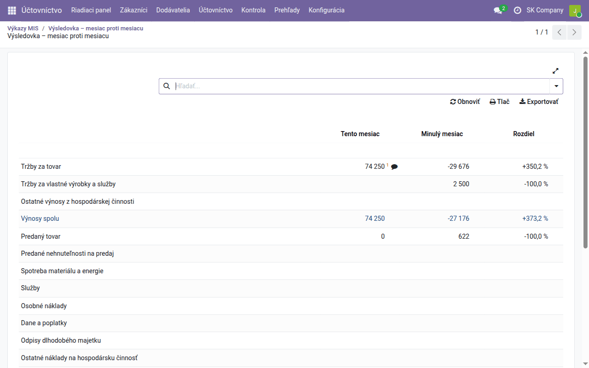
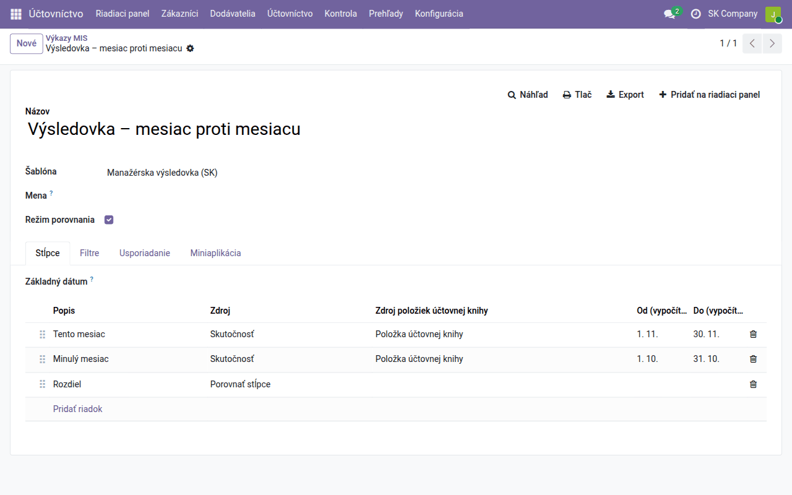
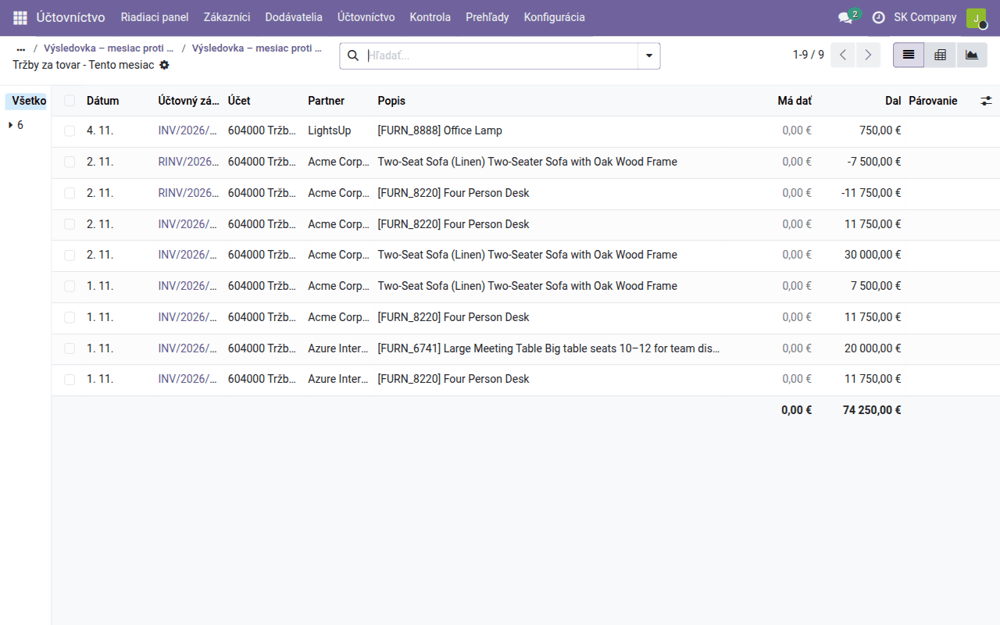
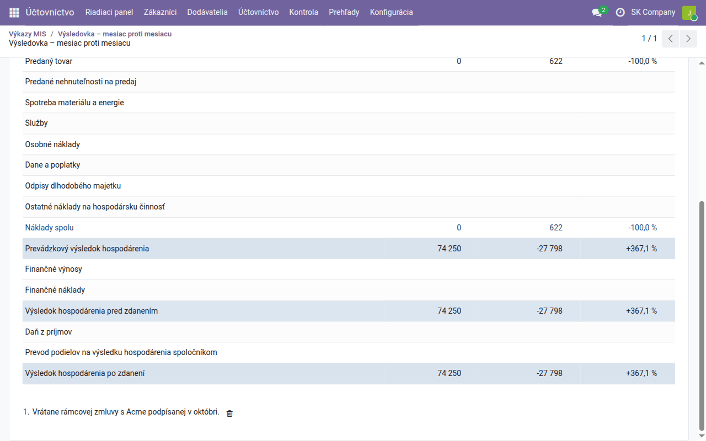
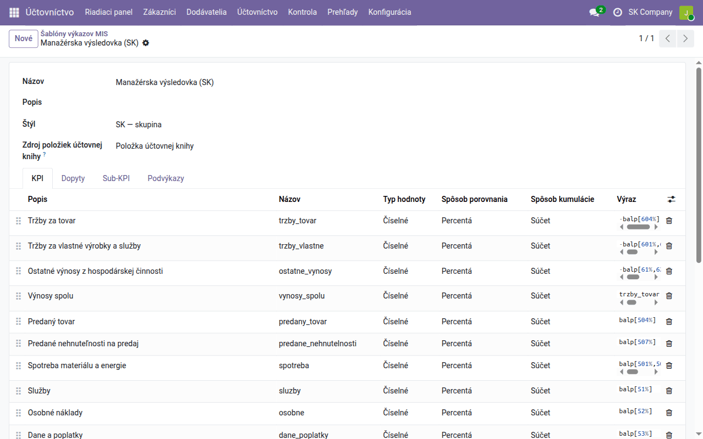

Návod k úlohe
Manažérske výkazy v MIS Builder
Ako zostaviť, spustiť, porovnať, rozkliknúť a okomentovať manažérsky výkaz — manažérsku výsledovku, prehľad pre vedenie alebo vlastný výkaz.
| Krajina | Česko a Slovensko |
|---|---|
| Edícia | Odoo Community |
| Zahŕňa | mis_builder, l10n_sk_mis_reports, l10n_cssk_mis_executive_summary, mis_builder_kpi_details, mis_builder_column_breakdown, mis_builder_annotation_icon, board |
Na čo slúži
Odoo Community nemá vlastné manažérske výkazy: menu Prehľady ponúka štatutárne výkazy a knihy, nie manažérsku výsledovku s týmto mesiacom oproti minulému. Túto medzeru vypĺňa OCA modul MIS Builder. MIS výkaz je tabuľka: riadky sú ukazovatele, ktoré si definujete (tržby, hrubá marža, doba obratu pohľadávok…) a stĺpce sú obdobia, ktoré si zvolíte (mesiac, rok, tento rok oproti minulému).
MIS výkaz je pohľad pre vedenie. Nie je to súvaha ani výkaz ziskov a strát, ktoré sa podávajú s účtovnou závierkou — tie vytvárajú moduly štatutárnych výkazov podľa riadkov oficiálneho tlačiva. Nesnažte sa tieto dva výkazy odsúhlasovať riadok po riadku.
Dve veci: šablóna a výkaz
| Čo obsahuje | Kde | |
|---|---|---|
| Šablóna | riadky: každý ukazovateľ, jeho vzorec a štýl. Bez dátumov. | Účtovníctvo → Konfigurácia → Výkazníctvo MIS → Šablóny výkazov MIS |
| Výkaz | šablóna + obdobia + filtre. Toto otvárate, tlačíte a exportujete. | Účtovníctvo → Prehľady → Výkazníctvo MIS → Výkazy MIS |
Jedna šablóna môže slúžiť viacerým výkazom: tá istá manažérska výsledovka ako mesačný výkaz, výkaz od začiatku roka a porovnanie dvoch rokov.
Čo smie používateľ robiť, určuje jeho rola v Účtovníctve (Nastavenia → Používatelia & spoločnosti → Používatelia, karta Prístupové oprávnenia): rola Iba na čítanie a vyššie otvorí výkazy MIS a účtovné zápisy za číslom; vytvárať výkazy a meniť šablóny smie rola Hlavný účtovník.
Šablóny, ktoré už máte
- Manažérska výsledovka (SK) — manažérska výsledovka na slovenskej
účtovej osnove z modulu
l10n_sk_mis_reports. Zoskupuje triedy 5 a 6 do riadkov výnosov, nákladov a výsledku. - Executive Summary (CZ/SK) — jedna strana s peniazmi, tržbami a
maržami, dobou obratu pohľadávok a záväzkov, bežnou likviditou a
rentabilitou aktív z modulu
l10n_cssk_mis_executive_summary.
Obe sú bežné šablóny: otvorte ich, zmeňte vzorec, pridajte riadok. Vaše zmeny aktualizácia modulu neprepíše.
Spustenie výkazu
- Otvorte Účtovníctvo → Prehľady → Výkazníctvo MIS → Výkazy MIS a kliknite na Nové.
- Zadajte Názov a vyberte Šablónu.
- Pre jedno obdobie nechajte Režim porovnania vypnutý a vyplňte Od a Do (alebo vyberte Časové obdobie).
- Kliknite na Náhľad. Výkaz sa otvorí v prehliadači; Tlač vytvorí PDF, Export súbor Excel.

Predvolene sa počítajú len zaúčtované doklady (Cieľové zápisy: Všetky zaúčtované zápisy). Na karte Filtre prepnete na Všetky zápisy (vrátane konceptov) a obmedzíte výkaz na analytický účet alebo inú podmienku na účtovných zápisoch (Analytická doména). Pri viacerých spoločnostiach môžete vykazovať aj viac spoločností naraz (Viac spoločností).
Porovnanie období
Zaškrtnite Režim porovnania a objaví sa karta Stĺpce. Každý riadok je jeden stĺpec (Zdroj a Režim nastavíte v okne riadku):
- Skutočnosť s režimom Pevné dátumy — obdobie, ktoré zadáte ručne.
- Skutočnosť s režimom Relatívne k základnému dátumu výkazu — obdobie počítané od Základného dátumu výkazu (prázdny = dnes): Typ obdobia deň, týždeň, mesiac, rok alebo časové obdobie z číselníka, Posun (0 = aktuálne, −1 = predchádzajúce) a Počet období. Od začiatku roka ho natiahne späť k 1. januáru. Výkaz „tento mesiac / minulý mesiac“ tak platí aj budúci mesiac bez akejkoľvek úpravy.
- Porovnať stĺpce — zmena medzi dvoma inými stĺpcami, pri sumách v percentách.
- Súčtové stĺpce — súčet (alebo rozdiel) iných stĺpcov, napríklad štvrťrok z troch mesiacov.
Príklad: Tento mesiac (relatívne, mesiac, posun 0), Minulý mesiac (relatívne, mesiac, posun −1) a Rozdiel (porovnať stĺpce Minulý mesiac a Tento mesiac).

Ak chcete jeden stĺpec rozdeliť na stĺpec za každý denník, partnera alebo
spoločnosť a za nimi súčet, pozrite
mis_builder_column_breakdown.
Čítanie výkazu
- Kliknite na číslo a otvoria sa účtovné zápisy, z ktorých vzniklo, už vyfiltrované na daný riadok a stĺpec. Tam ich môžete zoskupiť, filtrovať a otvoriť každý doklad.
- Ukážte myšou na číslo a uvidíte vzorec, z ktorého sa počítalo.
- Vyhľadávanie nad výkazom zúži všetky čísla naraz: napíšte partnera, účet alebo denník, alebo použite Vlastný filter… pre akúkoľvek inú podmienku. Uložiť aktuálne vyhľadávanie filter uloží medzi Obľúbené výkazu.
- Rozbalenie riadku po účtoch — alebo s modulom
mis_builder_kpi_detailspo partneroch, produktoch, denníkoch, mesiacoch či podľa iného poľa — tam, kde to šablóna pre riadok zapína.

Poznámky k číslam
Ku každému číslu môžete pripojiť poznámku, napríklad „vrátane rámcovej zmluvy podpísanej v októbri“:
- Ukážte myšou na riadok: pri každom čísle, ku ktorému sa dá poznámka pripojiť, sa objaví ikona poznámky. Kliknite na ňu a napíšte poznámku.
- Číslo s poznámkou má stále vyplnenú ikonu a číslo poznámky pod čiarou; poznámky sú vypísané pod výkazom a vytlačia sa do PDF aj do exportu do Excelu.
- Kliknutím na vyplnenú ikonu poznámku zmeníte; zmažete ju v zozname pod výkazom.

Kto smie poznámky vidieť a písať, je právo používateľa: Nastavenia → Používatelia & spoločnosti → Používatelia, otvorte používateľa (so zapnutým režimom vývojára), karta Prístupové oprávnenia, sekcia ĎALŠIE PRÁVA — Výkaz MIS: zobrazenie poznámok alebo Výkaz MIS: pridávanie poznámok. Administrátor má obe. K riadkom rozbaleným po účtoch sa poznámka pripojiť nedá.
Samotnú ikonu poznámky pridáva modul
mis_builder_annotation_icon;
nahrádza rozbaľovaciu šípku z OCA, ktorá vyzerala, akoby sa riadok dal
rozbaliť.
Výkaz na riadiacom paneli
Tlačidlo Pridať na riadiaci panel na výkaze ho umiestni na Riadiace panely → Môj riadiaci panel, kde sa obnoví pri každom otvorení.
Úprava šablóny
Šablónu otvoríte v Účtovníctvo → Konfigurácia → Výkazníctvo MIS → Šablóny výkazov MIS. Každý riadok na karte KPI má Názov (technický, používa sa v iných vzorcoch), Popis (čo výkaz zobrazí) a Výraz:
| Vzorec | Znamená |
|---|---|
balp[604%] |
zostatok účtov začínajúcich na 604, pohyby za obdobie |
bale[211%] |
zostatok ku koncu obdobia (peniaze, záväzky…) |
bali[211%] |
zostatok k začiatku obdobia |
crdp[6%], debp[5%] |
len pohyby na strane Dal alebo Má dať |
-balp[6%] |
výnosy kladne (zostatky na strane Dal sú záporné) |
trzby - naklady |
riadok vypočítaný z iných riadkov podľa ich názvov |

Názov riadku nesmie začínať na bal, crd, deb ani inú predponu
vzorca: MIS Builder ich prepisuje ako text a každý riadok, ktorý sa naň
odvoláva, ukáže #ERR. Pomenujte ho trieda_54_55, nie bal_54_55.
Riadky sa zobrazujú podľa Štýlu šablóny a vlastného štýlu riadku (tučné súčty, skryté pomocné riadky, počet desatinných miest). Štýly sú v Účtovníctvo → Konfigurácia → Výkazníctvo MIS → Štýly výkazov MIS.
Keď niečo nesedí
| Vidíte | Pozrite sa na |
|---|---|
| Prázdny výkaz | spoločnosť na karte Filtre a či sú doklady zaúčtované |
#ERR v riadku |
ukážte naň myšou, zobrazí sa chyba; zvyčajne preklep v názve riadku alebo názov začínajúci predponou vzorca |
| Číslo nesedí s hlavnou knihou | dátumy stĺpca a Cieľové zápisy; kliknite na číslo a uvidíte presne, ktoré zápisy počíta |
| Stĺpec na karte Stĺpce je červený | má neúplné dátumy: relatívny stĺpec potrebuje Typ obdobia |